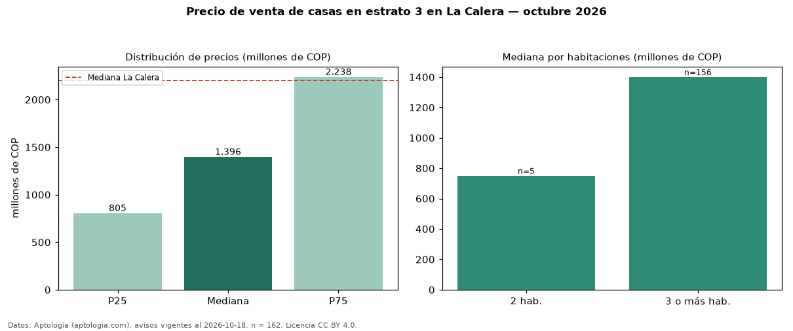

Precio de venta de casas en estrato 3 en La Calera — octubre 2026
En La Calera, la mediana de precio de venta de casas en estrato 3 es COP 1,40 mil millones, según 162 avisos vigentes. Eso es 37 % menos que la mediana de las casas en venta de La Calera (COP 2,20 mil millones, n = 1.328); este segmento reúne el 12 % de esos avisos. Por metro cuadrado, la mediana es COP 4,72 millones/m² (n = 140), 22 % por debajo de las casas en venta de La Calera (COP 6,05 millones/m²). La mitad central de los avisos va de COP 805 millones a COP 2,24 mil millones (razón 2,8), una dispersión alta. El área mediana anunciada es 330 m². El segmento con más oferta es el de 3 o más habitaciones (156 avisos, mediana COP 1,40 mil millones); pasar de 2 habitaciones a 3 o más habitaciones cambia la mediana +87 %. La administración mediana declarada es COP 498.000 al mes (n = 45). Datos: Aptología (aptologia.com), CC BY 4.0 — https://www.aptologia.com/venta/la-calera. Archivos: PDF, CSV con las cifras y gráfica PNG.

| Avisos únicos | 162 |
|---|---|
| Percentil 25 | COP 805.000.000 |
| Mediana | COP 1.396.500.000 |
| Percentil 75 | COP 2.237.500.000 |
| Mediana por m² | COP 4.721.362 |
Fuente: avisos vigentes de portales inmobiliarios recopilados por Aptología, deduplicados (mínimo 30 avisos únicos por celda). Precios pedidos, no cerrados. Fecha: 2026-10-18.